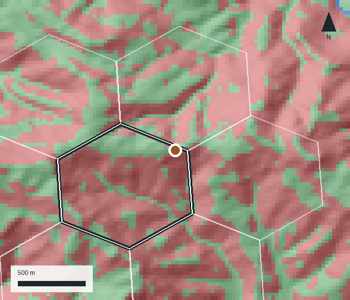

Hill land risk intelligence
Real estate and industrial development intelligence for Uttarakhand and Himachal Pradesh. Scan your investments for risk, plot by plot.

The problem
Slides, debris flows, flash floods and glacial-lake outbursts follow terrain, rivers and rain. A site visit in a dry month shows none of it.
In our tests against recorded landslides, the national landslide-susceptibility map showed almost no skill at plot level. It was built for regions, not for one hillside.
Lenders, lawyers and developers need numbers they can trace to a source, with the limits stated.
What you get
Each report covers the patch of ground around your plot, about 0.8 km², and its neighbours. Every figure comes from a stored measurement and a stated rule.
Which fifth of the block's hill patches your plot falls in, from an independent slope-failure model tested on events it had not seen.
Buildable ground, steep ground, torrent and river floors and outburst corridors, drawn pixel by pixel around the plot.
Height above the nearest channel, valley confinement and traced glacial-lake and glacier outburst corridors.
Heat, frost, fire weather, drought, heavy rain, wind and more, each with a value in its own unit and a fixed 1 to 5 score.
Road-network distance to the district capital, highway, hospital, school and market towns, plus road class, mapped power lines and substations, banks and ATMs.
A short written note on legal and ownership checks to run, earthquake design requirements and what to look for on a site visit.
Evidence
We trained on one inventory and tested on 67 recorded landslides found afterwards, in Himachal Pradesh and Uttarakhand.
Share of the 67 events in each ranked fifth of the block's hill patches
The rank is strong across regions and modest within one district: against similar ground in the same district its AUC is 0.66 (95% interval 0.61 to 0.71; 0.5 is chance). Samples are small, and news reports favour roads and towns, so read this as direction, not exact rates.
How it works
A map pin, coordinates or the village name and district.
The plot's patch and its neighbours are read against the stored measurements and the landslide model.
A PDF with the rank, the maps and tables, and a short written diligence note.
Made for
About
Every report is generated by the HimScan software from stored data and reviewed before it is sent, so the numbers can be traced and the limits are stated on the page.
Coverage is Uttarakhand and Himachal Pradesh. The model, its tests and their results are documented, and we can walk you through them.
Tell us the location and what you plan to build or lend against. We will send a report and a short note.
Get a reportWrite to hello@hillscanreport.com